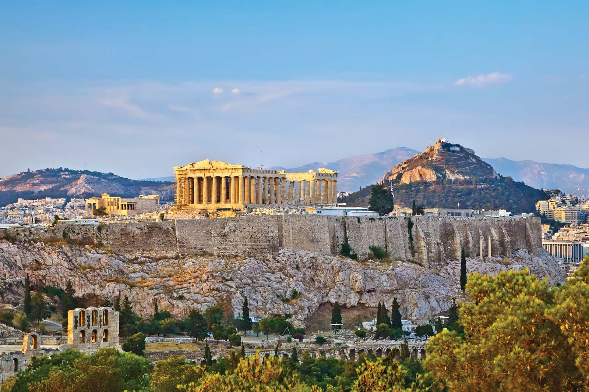
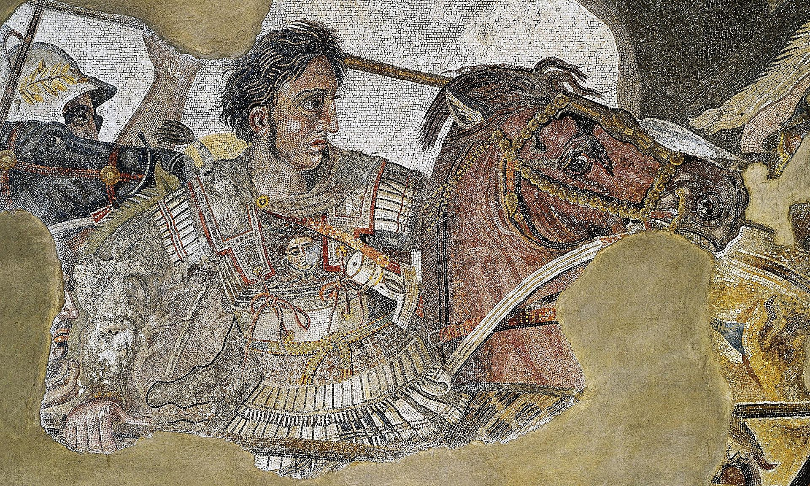

The term Ancient, or Archaic, Greece refers to the years 700-480 B.C., not the Classical Age (480-323 B.C.) known for its art, architecture and philosophy. Archaic Greece saw advances in art, poetry and technology, but is known as the age in which the polis, or city-state, was invented. The polis became the defining feature of Greek political life for hundreds of years.
Ancient Greece consisted of several hundred relatively independent city-states (poleis).
This was a situation unlike that in most other contemporary societies, which were either tribal or kingdoms ruling over relatively large territoriesOn the one hand, the ancient Greeks had no doubt that they were "one people"; they had the same religion, same basic culture, and same language.
Furthermore, the Greeks were very aware of their tribal origins; Herodotus was able to extensively categorise the city-states by tribe. Yet, although these higher-level relationships existed, they seem to have rarely had a major role in Greek politics.
For most of Greek history, education was private, except in Sparta.
During the Hellenistic period, some city-states established public schools. Only wealthy families could afford a teacher. Boys learned how to read, write and quote literature.
They also learned to sing and play one musical instrument and were trained as athletes for military service. They studied not for a job but to become an effective citizen. Girls also learned to read, write and do simple arithmetic so they could manage the household. They almost never received education after childhood
At least in the Archaic Period, the fragmentary nature of ancient Greece, with many competing city-states, increased the frequency of conflict but conversely limited the scale of warfare. Unable to maintain professional armies, the city-states relied on their own citizens to fight.
The scale and scope of warfare in ancient Greece changed dramatically as a result of the Greco-Persian Wars. To fight the enormous armies of the Achaemenid Empire was effectively beyond the capabilities of a single city-state.
The rise of Athens and Sparta as pre-eminent powers during this conflict led directly to the Peloponnesian War, which saw further development of the nature of warfare, strategy and tactics.
Literature and theatre, which were very intertwined, were important in ancient Greek society. Greek theatre began in the sixth century BCE in Athens with the performance of tragedy plays at religious festivals. These, in turn, inspired the genre of Greek comedy plays.
These two types of Greek drama became hugely popular, and performances spread around the Mediterranean and influenced Hellenistic and Roman theatre.In addition to written forms of theater and literature, oral traditions were important, especially in early Greek history.
Greek art, particularly sculpture and architecture, was also incredibly influential on other societies. Greek sculpture from 800 to 300 BCE took inspiration from Egyptian and Near Eastern monumental art and, over centuries, evolved into a uniquely Greek vision of the art form.